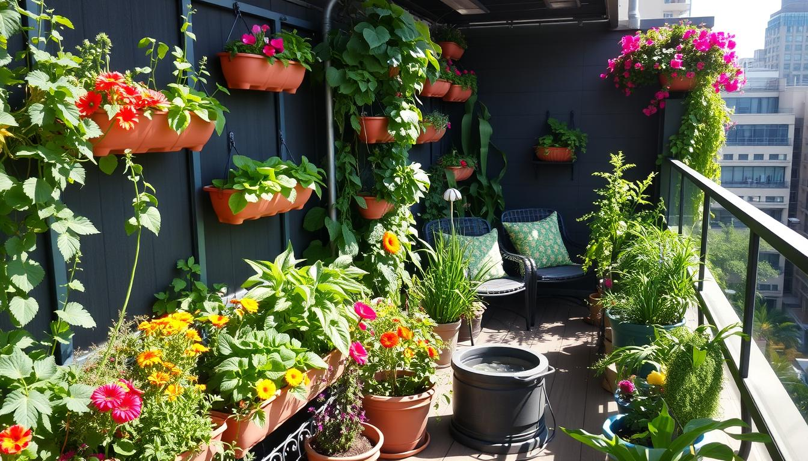

Small Space
Balcony Gardening
Learn how to design compact growing systems that thrive in limited urban spaces without sacrificing yield.
Read MoreINSIGHTS & TIPS
Practical advice, innovative techniques, and expert guidance for growing fresh food in modern city spaces.
Whether you’re working with a balcony, rooftop, or indoor setup, our articles help you build productive and sustainable growing systems.
From vertical planters to sun-tracking containers, discover practical upgrades that help you harvest more from less space.
Explore the guide
Learn how to design compact growing systems that thrive in limited urban spaces without sacrificing yield.
Read More
Discover efficient hydroponic methods that reduce water usage while accelerating plant growth indoors.
Read More
Explore the structural, environmental, and operational considerations behind successful rooftop cultivation.
Read More